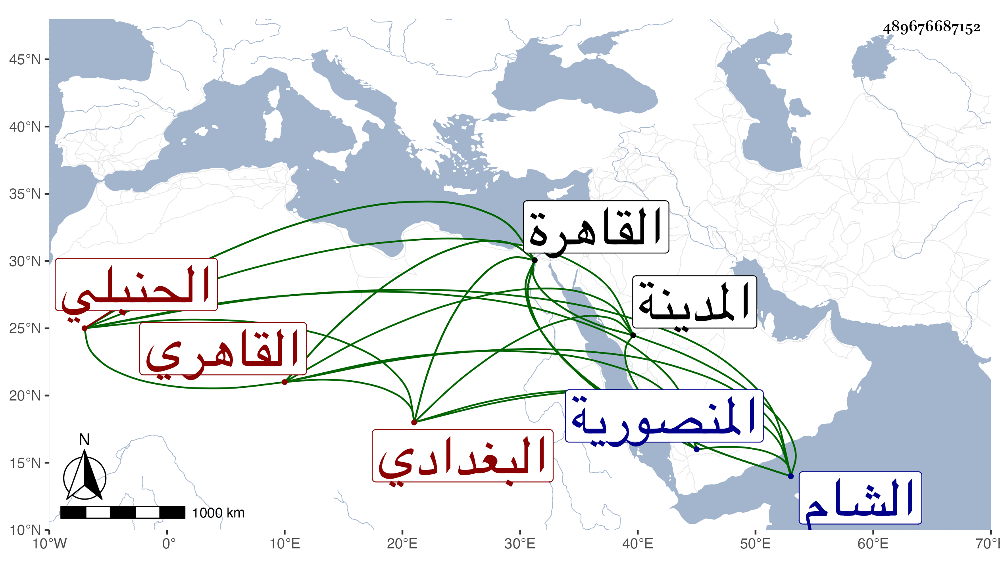

0902Sakhawi.DawLamic.ITO20230111-ara1.EIS1600.489676687152
Biography ID: 489676687152
1163
يوسف بن أحمد بن نصر الله بن أحمد بن محمد بن عمر الجمال أبو المحاسن بن المحب البغدادي الأصل القاهري الحنبلي الماضي أبوه وجده . ولد في رابع شوال سنة تسع عشرة وثمانمائة بالمدرسة المنصورية من القاهرة ونشأ بها في كنف أبيه فحفظ القرآن وعمدة الأحكام والخرقي وألفية النحو وعرض على جماعة كشيخنا وقرأ عليه أشياء وكذا قرأ على أبيه مسند إمامه وغيره وأخذ عنه الفقه غير مرة بل ومختصر الطوفي في الأصول والجرجانية في النحو وعن العز عبد السلام البغدادي في الصرف وغيره وعن أبي الجود في الفرائض والحساب وسمع أيضا على الزين الزركشي صحيح مسلم وعلى أبي عبد الله بن المصري سنن ابن ماجة وعلى الشمس الشامي في سنة تسع وعشرين الأول من حديث الزهري وغير ذلك وعلى ابن ناظر الصاحبة وابن الطحان والعلاء بن بردس بالقاهرة ومن البرهان الحلبي بها حين كان مع أبيه سنة آمد المسلسل بالأولية في آخرين ، ودخل بعد موته الشام غير مرة وأخذ بها في سنة ثلاث وستين عن ابن قندس وابن زيد واللؤلؤي والبرهان الباعوني وابن السيد عفيف الدين ، وأجاز له خلق بل أذن له والده في التدريس والإفتاء وأذن له في العقود والفسوخ بل والقضاء وكذا أذن له شيخنا وغيره في الإقراء ، واستقر بعد أبيه في تدريس الفقه بالمنصورية والبرقوقية وحضر عنده فيهما القضاة والأعيان وكذا استقر بعد العز الحنبلي في المؤيدية وفي غيرها من الجهات ومع ذلك فاحتاج لقلة تدبيره وسوء تصرفه وتبذيره إلى المباشرة بديوان الأمير تمراز ليرتفق بمعلومها وأكثر من التشكي وامتهان نفسه ومخالطته قبل ذلك وبعده لذوي السفه بحيث طمع فيه ناصر الدين بن الأخميمي الإمام شيخ البرقوقية وانتقص من معلومه فيها محتجا بزيادته فيه على بقية المدرسين ومع ذلك فما صرف له شيئا هذا مع توسله بأميره وبغيره وله شهادة عليه بالرضى بمشاركة رفقته وسافر في غضون ذلك لمكة بعد رغبته عن المؤيدية واستتابته قاضي مذهبه فيما عداها فحج وزار المدينة النبوية ، وأقام بكل منهما أشهرا ، ولقيته بكليهما ، وأنشدني أبياتا قال إنها من نظمه وكنت ربما سايرته في الرجوع وهو في غاية من الفاقة ، وقد درس وأفتى وحدث باليسير أخذ عنه بعض صغار الطلبة ، وكان يستحضر كثيرا من الفروع وغيرها ، وفي تصوره توقف ومع ذلك فلو كان متصونا ما تقدم عليه بعد العز غيره . مات في ليلة رابع المحرم سنة تسع وثمانين بمنزله من المنصورية ودفن عند أبيه رحمه الله وعفا عنه .
